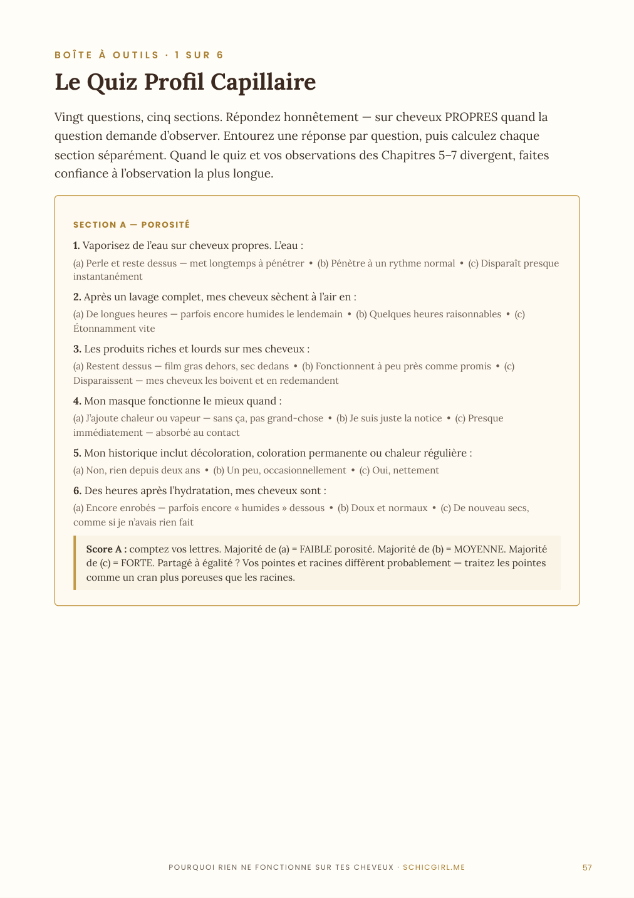
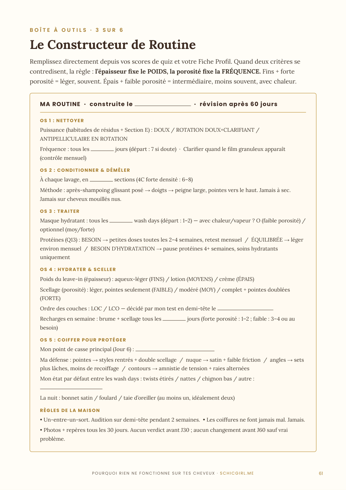

Nouveau · Le Système
Nouveau · Le Système
Pourquoi rien ne fonctionne sur tes cheveux — et comment enfin y remédier
Le système « diagnostic d'abord » pour cheveux crépus Type 4. Arrête d'acheter au hasard : diagnostique TES cheveux, puis construis la routine qui marche.
Un aperçu de tes pages


Vraies pages du guide · 66 pages · 12 chapitres + 6 outils à remplir
On diagnostique avant de prescrire
Tu n’as pas acheté de mauvais produits. Tu as suivi l’ordonnance de quelqu’un d’autre.
Le diagnostic d’abord
Avant de parler d’un seul produit, tu apprends à lire TES cheveux comme une pro.
Le test de porosité qui ment
Le test du verre d’eau est faux — et je te montre exactement pourquoi, et quoi faire à la place.
Le piège de la jumelle de boucles
Même texture qu’elle, résultat opposé : la texture ne fait qu’un quart de l’histoire.
L’étiquette décodée
Tu prends un flacon, tu lis 30 secondes, tu sais s’il est pour toi. Fini le cimetière de produits.
Ta fiche profil écrite
Porosité, densité, épaisseur, cuir chevelu — tout tient sur une carte que tu gardes.
Une seule action par chapitre
Chaque chapitre finit par UNE chose à faire. Pas dix. Tu avances vraiment.
- Le piège des « jumelles de boucles » : pourquoi le même produit donne 2 résultats opposés
- Comment l'étiquette te ment (et quoi lire vraiment)
- Les 3 mythes qui te font racheter en boucle
- Le test de porosité que tout le monde rate
- Densité, épaisseur, cuir chevelu : ton vrai profil capillaire
- Partie I — Pourquoi rien ne fonctionne (le piège des boucles, l'étiquette, les 3 mythes)
- Partie II — Diagnostique ton profil (motif, porosité, densité, cuir chevelu, ta carte capillaire)
- Partie III — Construis ta routine (hydratation selon ta porosité, LOC vs LCO, ingrédients, playbooks 4A / 4B / 4C, wash day)
- Partie IV — La preuve que ça marche (à quoi ressemblent 30, 60 et 90 jours)
- Partie V — Quiz profil + plan diagnostic 7 jours + Routine Builder
Pour toute femme aux cheveux crépus (4A, 4B, 4C) qui en a assez de gaspiller son argent en produits qui ne marchent pas — et qui veut enfin comprendre SES cheveux au lieu de copier ceux des autres.
C’est pour toi si…
- Tu as un placard plein de produits abandonnés
- Tu copies des routines qui ne marchent pas sur toi
- Tu ne connais pas ta vraie porosité
- Tu veux comprendre avant d’acheter
- You have a cabinet full of abandoned products
- You copy routines that don't work on you
- You don't know your real porosity
- You want to understand before buying
Ce n’est pas pour toi si…
- Tu veux qu’on te donne juste une liste de produits
- Tu ne veux pas faire de diagnostic
- Tu cherches un résultat sans rien comprendre
- You just want to be handed a product list
- You don't want to do any diagnosis
- You want results without understanding anything
2 bonus offerts avec ton guide
À Faire & À Éviter — les 6 moments qui décident
La Fiche Jour de Lavage — note ce qui marche
Les deux bonus se téléchargent depuis la dernière page de ton guide.

Éduquer, pas vendre du rêve
Schicgirl est dédiée à l’éducation des cheveux naturels, avec une spécialité : le Type 4. La mission est simple — aider les femmes à comprendre leurs cheveux pour obtenir des résultats qui durent, au lieu de courir après le produit miracle.
- Accès immédiat dès le paiement
- Téléchargement instantané du PDF
- Paiement 100% sécurisé sur Selar
- Accès à vie — c’est à toi pour toujours
Une question avant d'acheter ? Écris-moi sur Facebook 💛
Produit numérique à téléchargement immédiat. En finalisant ton achat, tu demandes la livraison immédiate et tu renonces à ton droit de rétractation de 14 jours : aucun remboursement une fois le fichier téléchargé. Un doute ? Pose-moi tes questions AVANT d’acheter, je réponds vraiment.
Ce qu'elles en disent
« J'achetais au hasard tout ce que les autres recommandaient. Maintenant je diagnostique d'abord. Fini le gaspillage. »
« Le déclic : ce n'était pas le produit, c'était moi qui ne connaissais pas mes cheveux. Ce guide m'a ouvert les yeux. »
« Enfin quelqu'un qui explique le POURQUOI avant le comment. Tout le reste a fait sens après. »
« Court, précis, sans blabla. Je l'ai lu en une soirée et j'ai changé ma routine dès le lendemain. »
Retours de lectrices sur le guide.
- Je reçois quoi ?
- Un PDF téléchargeable immédiatement, à garder à vie — avec le quiz, le plan 7 jours et le Routine Builder.
- En quoi c'est différent des autres guides ?
- Il part du diagnostic : tu comprends d'abord TES cheveux, ensuite tu construis. Pas de routine « universelle » qui ne marche pour personne.
- C'est pour quel type de cheveux ?
- Cheveux crépus Type 4 — 4A, 4B, 4C, toutes porosités.
- Comment je paie ?
- Paiement sécurisé sur Selar (carte, mobile money selon ton pays).